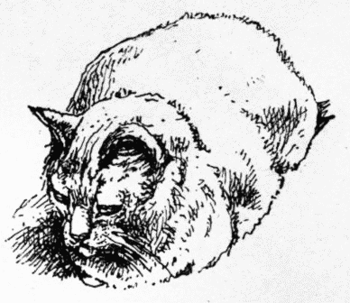
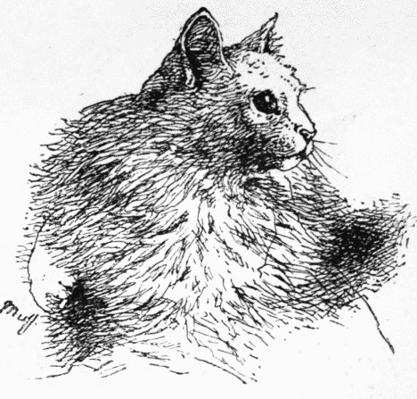

On the day for judging, at Ludgate Hill I took a ticket and the train for the Crystal Palace. Sitting alone in the comfortable cushioned compartment of a "first class," I confess I felt somewhat more than anxious as to the issue of the experiment. Yes; what would it be like? Would there be many cats? How many? How would the animals comport themselves in their cages? Would they sulk or cry for liberty, refuse all food? or settle down and take the situation quietly and resignedly, or give way to terror? I could in no way picture to myself the scene; it was all so new. Presently, and while I was musing on the subject, the door was opened, and a friend got in. "Ah!" said he, "how are you?" "Tolerably well," said I; "I am on my way to the Cat Show." "What!" said my friend, "that surpasses everything! A show of cats! Why, I hate the things; I drive them off my premises when I see them. You'll have a fine bother with them in their cages! Or are they to be tied up? Anyhow, what a noise there will be, and how they will clutch at the bars and try and get out, or they will strangle themselves with their chains." "I am sorry, very sorry," said I, "that you do not like cats. For my part, I think them extremely beautiful, also very graceful in all their actions, and they are quite as domestic in their habits as the dog, if not more so. They are very useful in catching rats and mice; they are not deficient in sense; they will jump up at doors to push up latches with their paws. I have known them knock at a door by the knocker when wanting admittance. They know Sunday from the week-day, and do not go out to wait for the meat barrow on that day; they——" "Stop," said my friend, "I see you do like cats, and I do not, so let the matter drop." "No," said I, "not so. That is why I instituted this Cat Show; I wish every one to see how beautiful a well-cared-for cat is, and how docile, gentle, and—may I use the term?—cossetty. Why should not the cat that sits purring in front of us before the fire be an object of interest, and be selected for its colour, markings, and form? Now come with me, my dear old friend, and see the first Cat Show."
Inside the Crystal Palace stood my friend and I. Instead of the noise and struggles to escape, there lay the cats in their different pens, reclining on crimson cushions, making no sound save now and then a homely purring, as from time to time they lapped the nice new milk provided for them. Yes, there they were, big cats, very big cats, middling-sized cats, and small cats, cats of all colours and markings, and beautiful pure white Persian cats; and as we passed down the front of the cages I saw that my friend became interested; presently he said: "What a beauty this is! and here's another!" "And no doubt," said I, "many of the cats you have seen before would be quite as beautiful if they were as well cared for, or at least cared for at all; generally they are driven about and ill-fed, and often ill-used, simply for the reason that they are cats, and for no other. Yet I feel a great pleasure in telling you the show would have been much larger were it not for the difficulty of inducing the owners to send their pets from home, though you see the great care that is taken of them." "Well, I had no idea there was such a variety of form, size, and colour," said my friend, and departed. A few months after, I called on him; he was at luncheon, with two cats on a chair beside him—pets I should say, from their appearance.
This is not a solitary instance of the good of the first Cat Show in leading up to the observation of, and kindly feeling for, the domestic cat. Since then, throughout the length and breadth of the land there have been Cat Shows, and much interest is taken in them by all classes of the community, so much so that large prices have been paid for handsome specimens. It is to be hoped that by these shows the too often despised cat will meet with the attention and kind treatment that every dumb animal should have and ought to receive at the hands of humanity. Even the few instances of the shows generating a love for cats that have come before my own notice are a sufficient pleasure to me not to regret having thought out and planned the first Cat Show at the Crystal Palace.
That cats may be trained to respect the lives of other animals, and also birds on which they habitually feed, is a well-known fact. In proof of this I well recollect a story that my father used to tell of "a happy family" that was shown many years ago on the Surrey side of Waterloo Bridge. Their abode consisted of a large wire cage placed on wheels. In windy weather the "breezy side" was protected by green baize, so draughts were prevented, and a degree of comfort obtained. As there was no charge for "the show," a box was placed in front with an opening for the purpose of admitting any donations from those who felt inclined to give. On it was written "The Happy Family—their money-box." The family varied somewhat, as casualties occurred occasionally by death from natural causes or sales. Usually, there was a Monkey, an Owl, some Guinea-pigs, Squirrels, small birds, Starlings, a Magpie, Rats, Mice, and a Cat or two. But the story? Well, the story is this. One day, when my father was looking at "the happy family," a burly-looking man came up, and, after a while, said to the man who owned the show: "Ah! I don't see much in that. It is true the cat does not touch the small birds [one of which was sitting on the head of the cat at the time], nor the other things; but you could not manage to keep rats and mice in there as well." "Think not?" said the showman. "I think I could very easily." "Not you," said the burly one. "I will give you a month to do it in, if you like, and a shilling in the bargain if you succeed. I shall be this way again soon." "Thank you, sir," said the man. "Don't go yet," then, putting a stick through the bars of the cage he lifted up the cat, when from beneath her out ran a white rat and three white mice. "Won—der—ful!" slowly ejaculated he of the burly form; "Wonder—ful!" The money was paid.
Cats, properly trained, will not touch anything, alive or dead, on the premises to which they are attached. I have known them to sport with tame rabbits, to romp and jump in frolicsome mood this way, then that, which both seemed greatly to enjoy, yet they would bring home wild rabbits they had killed, and not touch my little chickens or ducklings.
When I built a house in the country, fond as I am of cats, I determined not to keep any there, because they would destroy the birds' nests and drive my feathered friends away, and I liked to watch and feed these from the windows. Things went pleasantly for awhile. The birds were fed, and paid for their keep with many and many a song. There were the old ones and there the young, and oft by the hour I watched them from the window; and they became so tame as scarcely caring to get out of my way when I went outside with more food. But—there is always a but—but one day, or rather evening, as I was "looking on," a rat came out from the rocks, and then another. Soon they began their repast on the remains of the birds' food. Then in the twilight came mice, the short-tailed and the long, scampering hither and thither. This, too, was amusing. In the autumn I bought some filberts, and put them into a closet upstairs, went to London, returned, and thought I would sleep in the room adjoining the closet. No such thing. As soon as the light was out there was a sound of gnawing—curb—curb—sweek!—squeak—a rushing of tiny feet here, there, and everywhere; thump, bump—scriggle, scraggle—squeak—overhead, above the ceiling, behind the skirting boards, under the floor, and—in the closet. I lighted a candle, opened the door, and looked into the repository for my filberts. What a hustling, what a scuffling, what a scrambling. There they were, mice in numbers; they "made for" some holes in the corners of the cupboard, got jammed, squeaked, struggled, squabbled, pushed, their tails making circles; push—push—squeak!—more jostling, another effort or two—squeak—squeak—gurgle—squeak—more struggling—and they were gone. Gone? Yes! but not for long. As soon as the light was out back they came. No! oh, dear no! sleep! no more sleep. Outside, I liked to watch the mice; but when they climbed the ivy and got inside, the pleasure entirely ceased. Nor was this all; they got into the vineries and spoilt the grapes, and the rats killed the young ducks and chickens, and undermined the[15] building also, besides storing quantities of grain and other things under the floor. The result number one was, three cats coming on a visit. Farmyard cats—cats that knew the difference between chickens, ducklings, mice, and rats. Result number two, that after being away a couple of weeks, I went again to my cottage, and I slept undisturbed in the room late the play-ground of the mice. My chickens and ducklings were safe, and soon the cats allowed the birds to be fed in front of the window, though I could not break them of destroying many of the nests. I never noticed more fully the very great use the domestic cat is to man than on that occasion. All day my cats were indoors, dozy, sociable, and contented. At night they were on guard outside, and doubtless saved me the lives of dozens of my "young things." One afternoon I saw one of my cats coming towards me with apparent difficulty in walking. On its near approach I found it was carrying a large rat, which appeared dead. Coming nearer, the cat put down the rat. Presently I saw it move, then it suddenly got up and ran off. The cat caught it again. Again it feigned death, again got up and ran off, and was once more caught. It laid quite still, when, perceiving the cat had turned away, it got up, apparently quite uninjured, and ran in another direction, and I and the cat—lost it! I was not sorry. This rat deserved his liberty. Whether it was permanent I know not, as "Little-john," the cat, remained, and I left.
The cat is not only a very useful animal about the house and premises, but is also ornamental. It is lithe and beautiful in form, and graceful in action. Of course there are cats that are ugly by comparison with others, both in form, colour, and markings; and as there are now cat shows, at which prizes are offered for varieties, I will endeavour to give, in succeeding chapters, the points of excellence as regards form, colour, and markings required and most esteemed for the different classes. I am the more induced to define these as clearly as possible, owing to the number of mistakes that often occur in the entries.
Adult cats require less food in proportion than kittens, for two reasons. One is this: a kitten is growing, and therefore extra bone, flesh, skin, hair, and all else has to be provided for; while in the adults, these are more or less acquired, and also they procure for themselves, in various ways in country or suburban localities, much live and other food, and no animal is the better for over or excessive feeding, especially if confined, or its chances of exercise contracted.
I have tried many ways or methods of feeding, biscuits of sorts, liver, lights, horseflesh, bread and milk, rice, fish, and cat mixtures, but have always attained the best results by giving new milk as drink, and raw shin of beef for food, with grass, boiled asparagus stems, cabbage-lettuce, or some other vegetable, either cooked or fresh. Good horseflesh is much liked by the cat, and it thrives well on it. I do not believe in either liver or lights as a flesh or bone maker. Besides the beef, there are the "tit-bits" that the household cat not only usually receives, but looks for or expects.
My dear friend, Mr. John Timbs, in "Things not Generally Known," avers that cats are not so fond of fish as flesh, and that the statement that they are is a fallacy. He says, put both before them and they will take the flesh first, and this I have found to be correct. I should only give fresh fish, as a rule, to a cat when unwell, more as an alternative than food.
As raw meat or other raw food is natural to the cat, it is far the best, with vegetables, for keeping the body, coat, and skin in good condition and health, and the securing of a rich, bright, high colour and quality. On no account try to improve these by either medicinal liquids, pills, or condiments; nothing can be much worse, as reflection will prove. If the cat is healthy, it is at its best, and will keep so by proper food; if unwell, then use such medicines as the disease or complaint it suffers from requires, and not otherwise. Many horses and other animals have their constitutions entirely ruined by what are called "coat tonics," which are useless, and only believed in and practised by the thoughtless, gullible, and foolish. Does any one, or will any one take pills, powders, or liquids, for promoting the colour or texture of their hair; would any one be so silly? And yet we are coolly told to give such things to our animals. Granted that in illness medicine is of much service, in health it is harmful, and tends to promote disease where none exists.
I much prefer a round basket filled with oat straw to anything else; some urge that a box is better; my cats have a basket. It is well to sprinkle the straw occasionally with Keating's Powder or flour of sulphur, which is a preventive of insect annoyances, and "Prevention is better than cure."
Never shut cats up in close cupboards for the night, there being little or no ventilation; it is most injurious, pure air being as essential to a cat as to a human being.
Always have a box with dry earth near the cat's sleeping place, unless there is an opening for egress near.
Do not, as a rule, put either collar or ribbon on your cat; though they may thereby be improved in appearance, they are too apt to get entangled or caught by the collar, and often strangulation ensues; besides which, in long-haired cats, it spoils their mane or frill. Of course at shows it is allowable.
All cats, as well as other animals, should have ready access to a pan of clear water, which should be changed every day, and the pan cleaned.
Fresh air, sunlight, and warm sunshine are good, both for cats and their owners.
It is related of Charles James Fox that, walking up St. James's Street from one of the club-houses with the Prince of Wales, he laid a wager that he would see more cats than the Prince in his walk, and that he might take which side of the street he liked. When they reached the top, it was found that Mr. Fox had seen thirteen cats, and the Prince not one. The Royal personage asked for an explanation of this apparent miracle. Mr. Fox said: "Your Royal Highness took, of course, the shady side of the way as most agreeable; I knew the sunny side would be left for me, and cats always prefer the sunshine."
A most essential requisite for the health of the cat is cleanliness. In itself the animal is particularly so, as may be observed by its constant habit of washing, or cleaning its fur many times a day; therefore, a clean basket, clean straw, or clean flannel, to lie on—in fact, everything clean is not only necessary, but is a necessity for its absolute comfort.
Mr. Timbs says: "It is equally erroneous that she is subject to fleas; the small insect, which infests the half-grown kitten, being a totally different animal, exceedingly swift in running, but not salient or leaping like a flea."
In this Mr. Timbs slightly errs. Cats do have fleas, but not often, and of a different kind to the ordinary flea; but I have certainly seen them jump.
In dressing the coat of the cat no comb should be used, more especially with the long-haired varieties; but if so, which I do not recommend, great care should be used not to drag the hair so that it comes out, or breaks, otherwise a rough, uneven coat will and must be the result.
Should the hair become clotted, matted, or felted, as is sometimes the case, it ought to be moistened, either with oil or soft-soap, a little water being added, and when the application has well soaked in, it will be found comparatively easy to separate the tangle with the fingers by gently pulling out from the mass a few hairs at a time, after which wash thoroughly, and use a soft, long-haired brush; but this must be done with discretion, so as not to spoil the natural waviness of the hair, or to make it lie in breadths instead of the natural, easy, carelessly-parted flaky appearance, which shows the white or blue cat off to such advantage.
Most cats have a dislike to water, and as a rule, and under ordinary conditions, generally keep themselves clean, more especially the short-haired breeds; but, as is well known, the Angora, Persian, and Russian, if not taken care of, are sure to require washing, the more so to prepare them for exhibition, as there is much gain in the condition in which a cat comes before the judge.
There are many cases of cats taking to the water and swimming to certain points to catch fish, or for other food, on record; yet it is seldom that they take a pleasure in playing about in it. I therefore think it well to mention that I had a half-bred black and white Russian, that would frequently jump into the bath while it was being filled, and sit there until the water rose too high for its safety. Thus cats may be taught to like washing.
If a cat is to be washed, treat it as kindly and gently as is possible, speaking in a soothing tone, and in no way be hasty or sudden in your movements, so as to raise distrust or fear. Let the water be warm but not hot, put the cat in slowly, and when its feet rest on the bottom of the tub, you may commence the washing.
Mr. A. A. Clarke, the well-known cat fancier, says: "I seldom wash my cats, I rather prefer giving them a good clean straw-bed, and attending to their general health and condition, and they will then very seldom require washing. I find that much washing makes the coat harsh and poor, and I also know from experience that it is 'a work of art' to wash a cat properly, and requires an artist in that way to do it. My plan is to prepare some liquid soap, by cutting a piece into shreds, and putting it into cold water, and then boiling it for an hour. I then have two clean tubs got ready, one to wash, the other to rinse in. Have soft water about blood heat, with a very small piece of soda in the washing-tub, into which I place the cat, hind-quarters first, having some one that it knows perfectly well, to hold and talk to the cat while the washing is going on. I begin with the tail, and thoroughly rubbing in the soap with my hands, and getting by degrees over the body and shoulders up to the ears, leaving the head until the cat is rinsed in the other tub, which ought to be half filled with warm soft water, into which I place the cat, and thoroughly rinse out all the soap, when at the same time I wash the head, and I then sit in front of the fire and dry with warm towels; and if it is done well and thoroughly, it is a good three hours' hard work."
I would add to the foregoing that I should use Naldire's dog soap, which I have found excellent in all ways, and it also destroys any insect life that may be present.
Also in washing, be careful not to move the hands in circles, or the hair will become entangled and knotty, and very difficult to untwist or unravel. Take the hair in the hands, and press the softened soap through and through the interstices, and when rinsing do the same with the water, using a large sponge for the purpose. After drying I should put the cat in a box lightly, full of oat straw, and place it in front of, or near a fire, at such distance as not to become too warm, and only near enough to prevent a chill before the cat is thoroughly dry.
A very remarkable peculiarity of the domestic cat, and possibly one that has had much to do with the ill favour with which it has been regarded, especially in the Middle Ages, is the extraordinary property which its fur possesses of yielding electric sparks when hand-rubbed or by other friction, the black in a larger degree than any other colour, even the rapid motion of a fast retreating cat through rough, tangled underwood having been known to produce a luminous effect. In frosty weather it is the more noticeable, the coldness of the weather apparently giving intensity and brilliancy, which to the ignorant would certainly be attributed to the interference of the spiritual or superhuman. To sensitive natures and nervous temperaments the very contact with the fur of the black cat will often produce a startling thrill or absolutely an electric shock. That carefully observant naturalist, Gilbert White, speaking of the frost of 1785, notes: "During those two Siberian days my parlour cat was so electric, that had a person stroked her, and been properly insulated, the shock might have been given to a whole circle of people."
Possibly from this lively fiery sparkling tendency, combined with its noiseless motion and stealthy habits, our ancestors were led in the happily bygone superstitious days to regard the unconscious animal as a "familiar" of Satan or some other evil spirit, which generally appeared in the form of a black cat; hence witches were said to have a black cat as their "familiar," or could at will change themselves into the form of a black cat with eyes of fire. Shakespeare says, "the cat with eyne of burning coal," and in Middleton's Witch, Act III., Hecate says:
I will but 'noint, and then I'll mount.
(A Spirit like a cat descends. Voice above.)
There's one come down to fetch his dues.
(Later on the Voice calls.) Hark! hark! the cat sings a brave treble in her own language. (Then Hecate.) Now I go, now I fly,
Malkin, my sweet spirit, and I, etc.
Note.—Almost the same words are sung in the music to Macbeth.
"One of the frauds of witchcraft," says Timbs, "is the witch pretending to transform herself into a certain animal, the favourite and most usual transformation being a cat; hence cats were tormented by the ignorant vulgar."
"Rutterkin was a famous cat, a cat who was 'cater'-cousin to the great-great-great-great-great-great-great-great-great-grandmother of Grimalkin, and first cat in the caterie of an old woman who was tried for bewitching a daughter of the Countess of Rutland in the beginning of the sixteenth century. The monodis connects him with cats of great renown in the annals of witchcraft, a science whereto they have been allied as poor old women, one of whom, it appears, on the authority of an old pamphlet entitled 'Newes from Scotland,' etc., printed in the year 1591, 'confessed that she took a cat and christened it, etc., and that in the night following, the said cat was conveyed into the middest of the sea by all these witches sayling in their Riddles, or Cives, and so left the said cat right before the towne of Leith in Scotland. This done, there did arise such a tempest at sea as a greater hath not been seen, etc. Againe it is confessed that the said christened cat was the cause of the kinges majestie's shippe, at his coming forthe of Denmarke, had a contrarie winde to the rest of the shippes then being in his companie, which thing was most straunge and true, as the kinges majestie acknowledgeth, for when the rest of the shippes had a fair and good winde, then was the winde contrairie, and altogether against his majestie,' etc."Hone's "Every-day Book," vol. i.
"In some parts black cats are said to bring good luck, and in Scarborough (Henderson's 'Folk-lore of the Northern Counties'). A few years ago, sailors' wives were in the habit of keeping one, thinking thereby to ensure the safety of their husbands at sea. This, consequently, gave black cats such a value that no one else could keep them, as they were nearly always stolen. There are various proverbs which attach equal importance to this lucky animal, as, for example: Whenever the cat o' the house is black, The lasses o' lovers will have no lack.
"And again: Kiss the black cat, An' 'twill make ye fat; Kiss the white ane, 'Twill make ye lean.
"In Scotland there is a children's rhyme upon the purring of the cat: Dirdum drum, Three threads and a thrum; Thrum gray, thrum gray!
"In Devonshire and Wiltshire it is believed that a May cat—or, in other words, a cat born in the month of May—will never catch any rats or mice, but, contrary to the wont of cats, will bring into the house snakes, and slow-worms, and other disagreeable reptiles. In Huntingdonshire it is a common saying that 'a May kitten makes a dirty cat.' If a cat should leap over a corpse, it is said to portend misfortune. Gough, in his 'Sepulchral Monuments,' says that in Orkney, during the time the corpse remains in the house, all the cats are locked up, and the looking-glasses covered over. In Devonshire a superstition prevails that a cat will not remain in a house with an unburied corpse; and stories are often told how, on the death of one of the inmates of a house, the cat has suddenly made its disappearance, and not returned again until after the funeral. The sneezing of the cat, says Brand ('Popular Antiquities,' 1849, vol. iii., p. 187), appears to have been considered as a lucky omen to a bride who was to be married on the succeeding day.
"'In Cornwall,' says Hunt, 'those little gatherings which come on children's eyelids, locally called "whilks," and also "warts," are cured by passing the tail of a black cat nine times over the place. If a ram cat, the cure is more certain. In Ireland it is considered highly unlucky.'"Mr. T. F. Thiselton Dyer's "English Folk-lore."
Sailors are very superstitious as regards cats. If a black cat comes on board, it is a presage of disaster; if the ship's cat is more lively than ordinary, it is a sign of wind; but if the cat is accidentally drowned, then there is consternation, which does not wear off until the vessel is safe in harbour.
Lady Wilde, in her "Irish Legends," gives a cat story quite of the fairy type, and well in keeping with many of witchcraft and sorcery. "One dark, cold night, as an old woman was spinning, there came three taps at her door, and not until after the last did she open it, when a pleading voice said: 'Let me in, let me in,' and a handsome black cat, with a white breast, and two white kittens, entered. The old woman spun on, and the cats purred loudly, till the mother puss warned her that it was very late, that they wanted some milk, and that the fairies wanted her room that night to dance and sup in. The milk was given, the cats thanked her, and said they would not forget her kindness; but, ere they vanished up the chimney, they left her a great silver coin, and the fairies had their ball untroubled by the old woman's presence, for the pussy's warning was a gentle hint."
If a kitten comes to a house in the morning, it is lucky; if in the evening, it portends evil of some kind, unless it stays to prevent it.
A cat's hair is said to be indigestible, and if one is swallowed death will ensue (Northern).
Milton, in his "Astrologaster," p. 48, tells us: "That when the cat washes her face over her eares we shall have great store of raine."
Lord Westmoreland, in a poem "To a cat bore me company in confinement," says: ——Scratch but thine ear, Then boldly tell what weather's drawing near.
The cat sneezing appears to be a lucky omen to a bride.
It was a vulgar notion that cats, when hungry, would eat coals; and even to this day, in some parts there is a doubt about it. In "The Tamer Tamed, or, Woman's Pride," Izamo says to Moroso, "I'd learn to eat coals with a hungry cat"; and in "Boduca," the first daughter says, "They are cowards; eat coals like compelled cats."
"The crying of cats, ospreys, ravens, or other birds upon the tops of houses in the night time are observed by the vulgar to presignify death to the sick."—Brand.
There is also a superstition that cats will suck the breath of infants. Nothing could be more ridiculous. The formation of the cat's mouth is not well adapted for such action, the under jaw being shorter than the upper, which is one reason why it laps fluids instead of drinking. Cats will creep into cradles, but for no other purpose than that of sleep, the bed and clothes being warm and soft, and of course comfortable; yet instead of doing harm, they help to keep the child's temperature more even in cold weather. Of course, if they lie on the infant, it is a different matter.